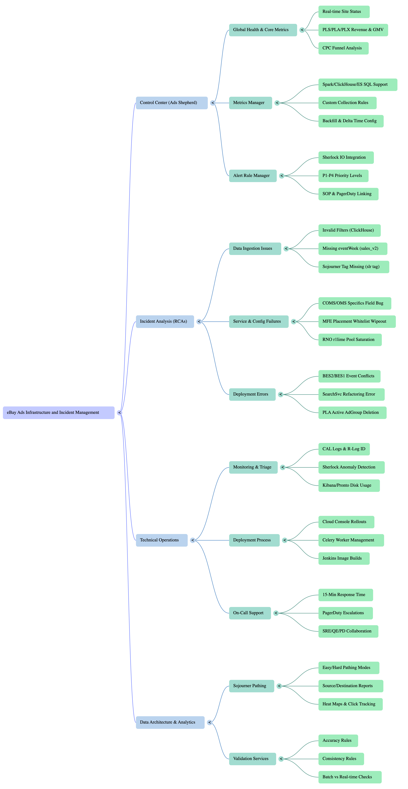

How ecommerce ads work
Online marketplaces earn from transactions and, increasingly, from retail media: paid placements that put seller or brand offers in front of people who are already searching, comparing, or viewing product detail pages on the site.
The basic loop is simple. A shopper issues a search or opens a listing; the platform chooses which sponsored results, carousel slots, or display units to interleave with organic results. Sellers (or agencies on their behalf) bid or allocate budget for those placements so their listings surface when purchase intent is high.
How they charge depends on the program: cost-per-click (pay when someone clicks), cost-per-mille (pay per thousand impressions), or cost-per-sale / cost-per-action when the platform can tie an ad exposure to a checkout. The site records impressions, clicks, and downstream events so campaigns can be measured, optimized, and billed consistently.
Why this differs from generic banner ads: the same catalog, search, identity, and checkout signals that power shopping also feed targeting and attribution, often in tens of milliseconds. That is why large marketplace ad stacks sit next to search, recommendations, payments, and fraud systems — the topic of the chapters below.
- Supply — ad slots on search, browse, and item pages.
- Demand — sellers and brands competing for those slots via campaigns and budgets.
- Decisioning — auctions or ranking that pick winners under latency and policy constraints.
- Measurement — event pipelines linking views and clicks to orders for reporting and billing.
Process node flow
Two views of the same system: how a placement gets chosen when someone shops, then how clicks and orders feed measurement and billing. Use the buttons to switch scenarios; click again to replay.
Architecture mind map and video bookmarks consolidated from earlier internal notes (same content scope as this guide).
